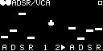

Gate In
Opens the envelope gate (can be retriggered).
Toggle Envelope In
Switches between the two envelopes when triggered.
VCA Audio In
Audio input for the voltage-controlled attenuator.
10V Envelope Out
Envelope output with a peak at 10V.
5V Envelope Out
Envelope output with a peak at 5V.
VCA Audio Out
Audio output for the voltage-controlled attenuator.